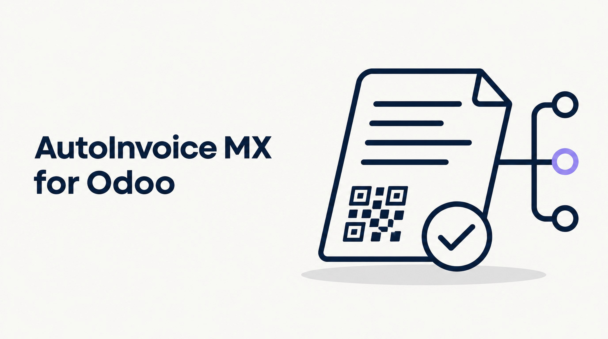
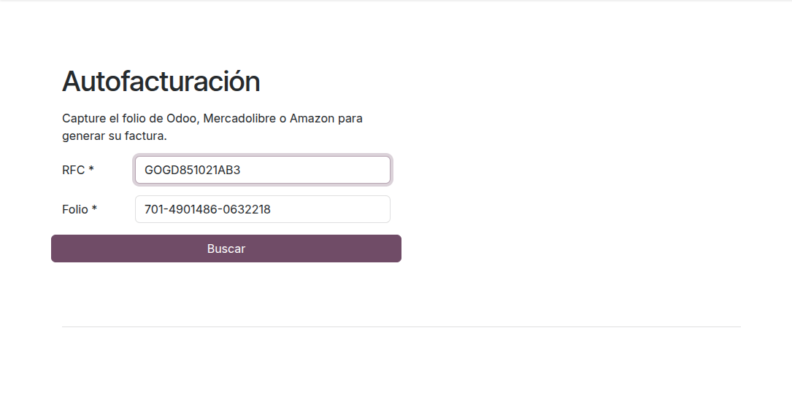
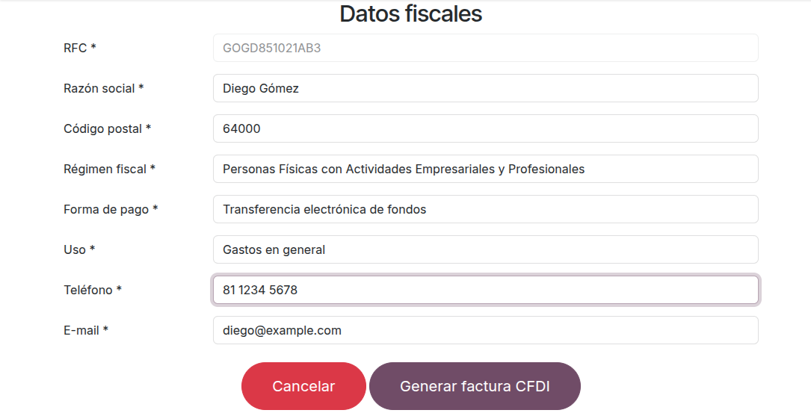
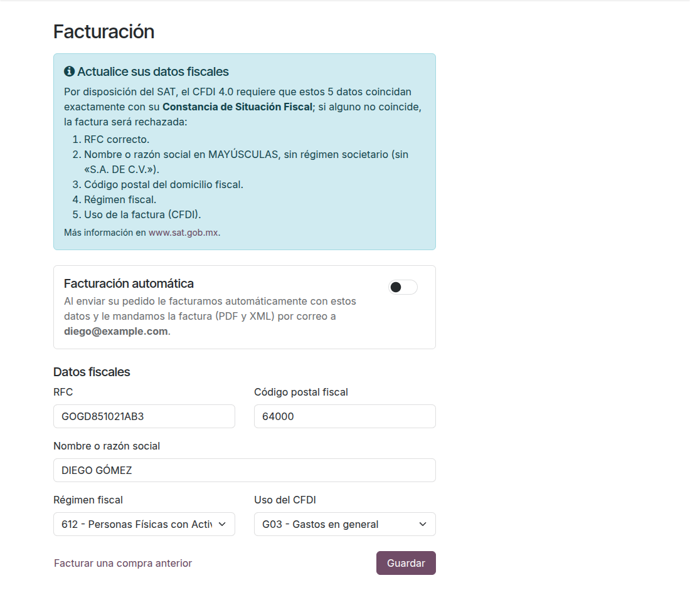
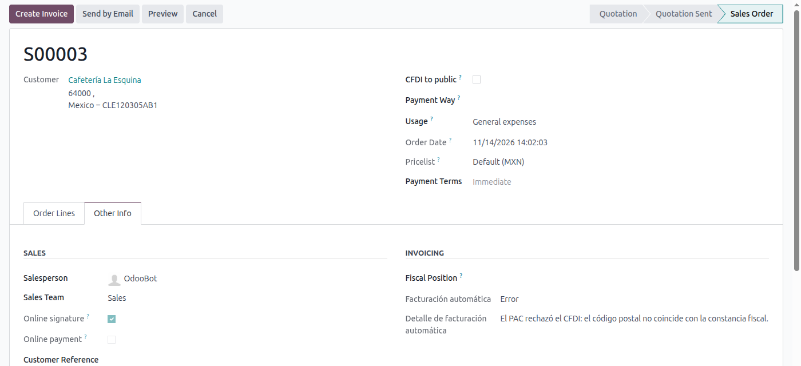

Noden Labs · Odoo 20 Enterprise · Mexico
AutoInvoice MX: let your Mercado Libre and Amazon customers invoice themselves. You just sell.
Self-service CFDI 4.0 invoicing for sellers on Mercado Libre, Amazon, Yuju or their own store. The customer enters an order number and an RFC; Odoo creates the invoice, stamps it and hands it over in seconds. No “can you invoice me?” emails, no typing tax data by hand, no SAT rejections.
Free Odoo 20.0 Enterprise Mexico only · CFDI 4.0 Spanish customer-facing pages
Every “I need an invoice” is a message, a data-entry session, a stamping run and an email. Multiply by hundreds of orders a month and it is a full-time job — and every typo in an RFC or postal code is a cancellation.
Find the order, copy the RFC, pick the tax regime and CFDI use, stamp, send.
Legal name with “S.A. de C.V.”, a postal code that doesn’t match, a regime that doesn’t fit the RFC.
The customer asks weeks later and your accountant has already closed the month.
Two paths, same result: a stamped, delivered CFDI 4.0. Use one or both.
Path 1 · Self-service
/billingAccepts the Mercado Libre order number (including carts with several orders), the Amazon order ID — with or without dashes — and the Yuju or Odoo sale reference. The link can carry the order number pre-filled.
Path 2 · Fully automatic
/my/billing and turns on Automatic invoicing.Ideal for distributors and repeat buyers: zero clicks from your team and zero messages from the customer. Partial deliveries are invoiced for what shipped.


The order number each channel stores is recognised automatically. No mapping tables, no configuration: it uses whatever you have installed.
Works with Odoo’s native Amazon connector (sale_amazon) out of the box, and with noden_amazon on top of it. Amazon order IDs are accepted with or without dashes.
Recognises the order number from noden_mercadolibre, including carts that group several orders into one sale.
Uses the channel order reference Yuju stores on the sale, so multichannel sellers are covered too.
Any Odoo sale can be invoiced with its own number: website, B2B, counter sales.
Designed for the day-to-day of a Mexican marketplace seller.
Creates the invoice, posts it and stamps it with Odoo’s CFDI 4.0. The customer sees the stamped PDF and XML, without waiting for someone to send them.
Checks the RFC (individual, company or generic), the 5-digit postal code and that the regime fits the type of person. Uppercases the legal name and strips the company type (S.A. de C.V., S. de R.L.…) as the SAT requires.
Rejects unconfirmed or undispatched orders with a clear message. You never invoice goods that haven’t left your warehouse.
A stamping error never undoes the delivery. The posted invoice stays safe and Odoo retries up to three times; if it still fails, the sale shows Error with the PAC’s reason.
If the customer enters the number again, they get the existing invoice instead of a new one. A leftover draft never blocks the retry.
At /my/billing each customer keeps their RFC, legal name, postal code,
regime and CFDI use, with the SAT requirements in view. The RFC locks once invoices
exist, so nobody rewrites their tax history.


If you spend just 5 minutes per requested invoice, 200 invoices a month is more than 16 hours of work. AutoInvoice MX brings it to zero.
minutes of data entry per invoice
customers invoice themselves at any hour
free module, no per-invoice fees
Version 20.0 Enterprise with the Mexican localization and electronic
invoicing (l10n_mx_edi) configured with your PAC. Uses Sales, Inventory,
Accounting, Website and Portal.
Built exclusively for Mexico: CFDI 4.0, SAT catalogues (regimes, CFDI use, payment methods) and RFC validation rules.
Optional: with native Amazon (sale_amazon), noden_mercadolibre,
noden_amazon or Yuju installed, their order numbers are recognised
immediately. Without them it works on your Odoo sales.
No. It is built for Odoo Enterprise with Mexican electronic invoicing enabled and a PAC configured.
No. Any Odoo sale can be invoiced by its number. The native Amazon connector, the Noden connectors and Yuju only add recognition of the marketplace order number.
They are told the order hasn’t been dispatched yet and can come back once it is delivered. Goods that haven’t shipped are never invoiced.
In self-service the customer sees a readable reason and can fix their data. In automatic invoicing the invoice stays posted, is retried, and the error is recorded on the sale.
Yes. The /billing and /my/billing pages speak to Mexican customers in Spanish.
Yes. Automated tests cover the full delivery, invoicing, stamping and email flow, PAC errors with retries, tax-data validation and the customer portal.
Support is provided by Noden Labs. Write to noden@sentilis.me and include the sale reference — the automatic-invoicing detail tells us most of what we need.
Noden Labs · Facebook · YouTube · noden@sentilis.me